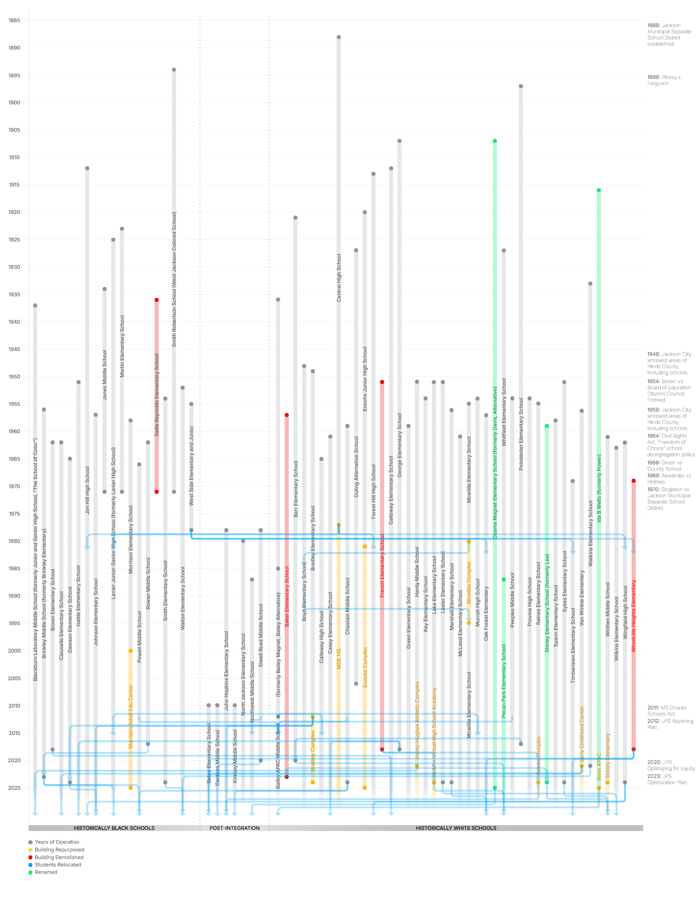
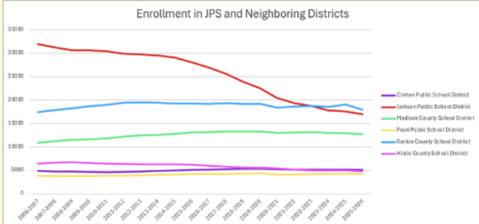
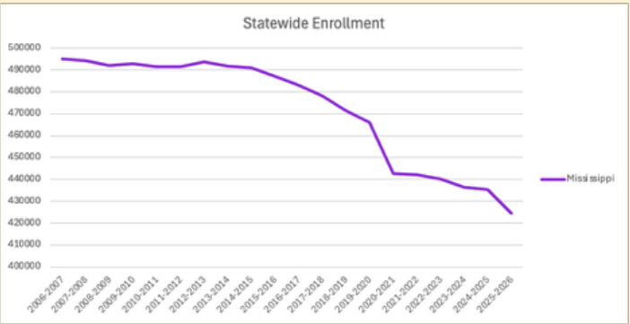
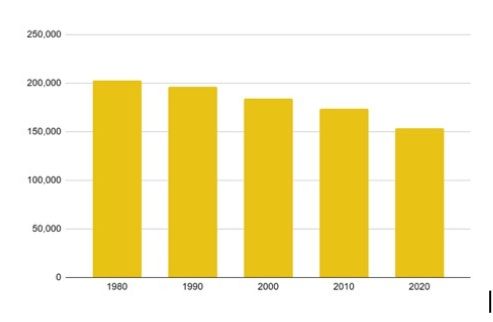
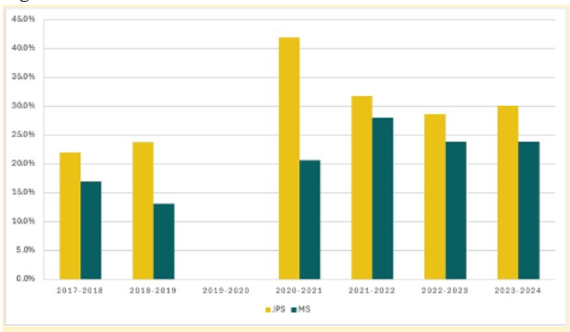
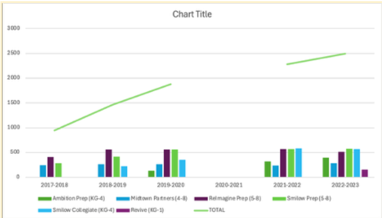
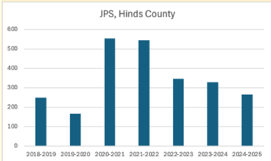

Jackson Public Schools
About This Project
Across the United States, more than 15,000 public schools closed between 2010 and 2022, affecting more than 2.7 million students.1 School closures do more than change where children learn. They reshape neighborhoods, alter the built environment, and leave lasting impacts on families and communities. While national trends and broader economic policies shape school closures, local decisions, policies, and histories often determine how and where closures happen.2
Jackson, Mississippi, has experienced this reality firsthand.
In 2023, the Jackson Public School Board voted to close 13 schools across the district. By the summer of 2025, one high school, two middle schools, and eight elementary schools had closed. Students were reassigned to other schools, and many former school properties became available for redevelopment.
For students and families, these changes can mean longer commutes, disrupted routines and educational trajectories, and the loss of important community spaces. For neighborhoods, school closures raise larger questions about community identity, public investment, and the future of local institutions.
These closures are not isolated events. In 2011-12, Jackson Public Schools operated 59 traditional schools across the city. By the end of the 2024-25 school year, only 35 remained open, including 22 elementary schools, 7 middle schools, and 6 high schools. This represents a 40% reduction in the district's schools. Today, the district also operates eight special schools or programs.
As Jackson considers how former school sites may be reused, communities across the city are also reckoning with the decisions, policies, and historical forces that contributed to these closures.
The Reparative Narratives - Reparative Futures Initiative (RNRF) was created to support that conversation by asking a central question: How did we get here?
To explore this question, the RNRF team created a living digital archive and interactive map that brings together historical records, public data, media coverage, and community stories. Together, these materials tell a broader story about the Jackson Public School District, the city it serves, and the communities shaped by policy changes. Rather than focusing only on school closures themselves, this project traces the historical, political, social, and spatial conditions that made them possible.
The information presented on this website draws from mixed-methods research that combines archival research, public data analysis, content analysis, land-use analysis, community engagement, and interviews with community members.
Key sources include:
Media Coverage: news articles, editorials, and reports from local television and news organizations, including Mississippi Free Press, Jackson Free Press, Mississippi Today, WLBT, WAPT, and WJTV, and other blogs and organization websites. National outlets included the New York Times, Propublica, and others.
Public Data: State enrollment records, accountability reports, national demographic data, and other publicly available information from Jackson Public Schools (JPS), Mississippi Department of Education (MDE), Mississippi Charter School Authorizer Board (MSCSAB), U.S. Census Bureau, and National Center for Education Statistics.
Archival Research: Historical local and regional newspapers, including Clarion-Ledger, Freedom School archives, Mississippi Historical Society, and collections from the Mississippi Department of Archives and History.
Academic sources included articles, books, and reports about public education, school closures, segregation, and urbanism, and how these institutions and social relations have played out locally.
Through a reparative lens, we explore the policies and practices that shaped Jackson’s present-day challenges—while curating community voices that imagine a more equitable future for Jackson, one in which repair and justice is realized.
1https://nces.ed.gov/programs/digest/d22/tables/dt22_216.95.asp Also see: National Center for Educational Statistics in Boehm, 2024, p.2
2(Thiem, 2009; Good, 2022, p. 606-607)
Project Team:
Jocelyn Poe
Maya Porath, Marcos Escamilla-Guerrero, Della Alderson
Website Design and Spatial Analysis:
Marcos Escamilla-Guerrero
Selected School
Map Layers
Enrollment by Year
Graduation vs Dropout Rates
(High School Only)
Notes
—
JPS Historical Landscape

School closures do not happen in isolation. They emerge from decades of decisions, policies, economic changes, demographic shifts, and community struggles. To better understand the school closures affecting Jackson Public Schools, we created a historical timeline that places school closures within a broader local, state, and national context.
In a Survey of Hinds County public schools, 1955, educational consultants wrote “Segregation in the schools of Mississippi developed historically before there were any laws on the subject. It was a natural process then and it is a natural process now. We believe that a continuation of segregation in Mississippi irrespective of whether it is maintained by law is not only possible but necessary for the best development of each group.” (Associated Consultants in Education, 54)
Segregation, Desegregation, and Re-segregation
“The Brown ruling was, in a way, the beginning and the end of desegregation in most Mississippi public schools.” (Wesley, Dalbey & Harris, 17)
Shortly after the desegregation efforts of 1971, the demographics of students changed. White students transferred to private schools and segregation academies at increasingly higher rates, resulting in a growing black student body in public schools. In 1970, , the populations shifted, and Black students
Click on every section below to learn more about Jackson's public schools.
Mapping the History of Jackson's Schools: Openings, Closures, and Student Relocations (1887-2026)
The image below provides a visual history of school openings, closures, repurposing, and student movement across Jackson Public Schools.
Beginning in 1887 with the creation of the Jackson Municipal Separate School District (JMSD), the graphic traces the operation of schools across the city over more than a century.
Schools are organized alphabetically according to their historical role within the segregated school system. Schools that historically served Black students appear on the left, schools that historically served White students appear on the right, and schools opened after desegregation appear in the center. Key events related to school closures are highlighted along the right side of the timeline and are discussed in greater detail in the historical timeline below.
The timeline is organized this way to highlight two important realities. First, the historic structure of Jackson's school system continues to shape the educational landscape today. Second, while recent closures have affected many families and neighborhoods, school closures are not a new phenomenon in Jackson.
The blue arrows show where students were reassigned following school closures. In some cases, students experienced multiple relocations as schools continued to close over time. For example, students attending Poindexter Elementary were reassigned to Barr Elementary when Poindexter closed in 2017. When Barr closed in 2020, those students were reassigned again to Pecan Park Elementary. These transitions illustrate how school closures can have cumulative effects on educational experiences, community connections, and neighborhood stability.
Information about student reassignment was not always publicly available, so the relocation data shown here are incomplete. Nevertheless, we included the information available to help visualize the extent of movement and change experienced by students and families across multiple rounds of school closures.
This analysis focuses on traditional elementary, middle, and high schools. Special programs and specialty schools were excluded because students typically remain enrolled in a neighborhood or "home" school while participating in those programs. The goal was to better understand the role that traditional schools have played within Jackson's neighborhoods and communities.
Schools labeled "Repurposed" (shown in yellow) remain under Jackson Public Schools ownership but have been converted to administrative, support, alternative, or other nontraditional educational uses. Former school buildings that were sold or converted to non-JPS uses are included up until their ownership changed, with the exception of Central High School, which now houses offices for the Mississippi Department of Education.

How We Got Here: A History of Jackson Public Schools
This timeline traces key events that have shaped public education in Jackson over time. It includes financial, political, social, and infrastructure-related changes, helping to show how different forces have interacted across decades to influence the school district and its communities. The timeline also documents the sequence of school closures, consolidations, and relocations across the district. Every closure affects more than a building. Students, educators, staff, and families must adapt to new schools, new routes, and new social environments.
The timeline is organized chronologically, but history is rarely a simple, linear story. Many events overlap, reinforce one another, or produce consequences that unfold years later. Rather than presenting a single cause-and-effect narrative, this timeline offers a tool for exploring the interconnected factors that have shaped Jackson Public Schools.
Each entry is color-coded by theme:
-
Financial entries highlight funding changes, economic shifts, and fiscal decisions.
- Bond
- Funding Formula
-
Political entries include legislation, court decisions, governance changes, and policies.
- Legislation
- Court Cases
- Comissions
- Policy
-
Social entries capture demographic changes, community movements, and broader social conditions.
- Civil Rights Movements
- Desegregation
- Demographic Shifts
- Covid-19
- School Operations entries relating to district wide programs, plans, enrollment data, and operational issues
-
School Facilities entries document school construction, operating, closures, consolidations, and changes to physical facilities.
- School Closures
- New School Building
| Year | Event/Description |
|---|---|
| 1848 | New Schools. Opening of one of the first publicly supported schools in Jackson at College Green, The Jackson Male Academy, and the Jackson Female Academy. Most schools or classrooms at the time were private, or independent initiatives, in churches or homes.3 |
| School Operations. Early efforts for a school oversight included the Jackson School Association, and later a Board of Trustees that operated closely with the city council. | |
| 1865 | Legislations. Mississippi State constitutional convention establishes a state education system for all children, bolstered by the first legislature five years later. 4 |
| 1870 | New School. First free school for Negros opened on West Pearl Street. 5 |
| 1878 | Legislation. Democratic government dictated state education systems to be separated by race. 6 |
| 1879 | School Operations. At this time, there are three free schools operating in the city: the College Green and the West Ward school for white students, and the Negro school.7 A total of 140 students were enrolled in the white schools, and 223 in the Negro school. |
| 1887 | Legislation. The Jackson Separate School System was established. This coincided with efforts to consolidate schools for white students.8 In its early years, the board of trustees mainly tended to matters concerning Jackson’s Graded School in the Central School, and provided little support or oversight of the school for “colored or black” students.9 |
| 1887 | New School. Central High School opened for white students, consolidating College Green and West Ward Schools. However due to construction delays, the school year began in the College Green building with 321 students.10 |
| 1894 | New School. The Colored School opened for Jackson’s black students, later named after Smith Robertson. A new building was constructed in 1909. |
| 1896 | Court Case. Plessy vs Ferguson determined states may continue to uphold racial segregation by providing "separate but equal" accommodations. |
| 1897 | New School. West Jackson School opened. Students moved into their new building in 1900, later renamed as Poindexter School.11 |
| 1902 | New School. South Ward school, named for General Lee, opened (renamed Shirley in 2021). Students moved into their new building the following year.12 The Colored School was renamed Smith Robertson. |
| 1907 | New Schools. Opening of George School in Duttonville and the North Ward School, named for Jefferson Davis (renamed after President Barack H. Obama Magnet School in 2018). |
| School Operations. Records show that there were 1,362 white students enrolled across five schools, and 982 black students in Smith Robertson.13 | |
| 1912 |
New Schools. Two new schools opened, Jim Hill High School for black students, and Galloway Elementary for white students.
Enrollment: 47% of students were black, across two schools.14 |
| 1913 | New School. Forest Hill High School opens for black students in Hinds County and was later annexed into the City of Jackson in 1977. |
| 1916 | New School. Power Elementary school opens for white students. Later renamed for Ida B. Wells. |
| 1920 | New School. Enochs Junior High School opens for white students. The new building also served Poindexter Elementary, replacing its previous building.15 |
| 1921 | New School. Barr Elementary opens for white students. |
| 1921 | School Program. Central High School gained full accreditation. Curriculum expanded to include vocational training, such as wood-working, bookkeeping, typing, languages and art.16 Central later moved to a different location. |
| 1923 | New School. Martin Elementary School opens for black students. |
| 1925 | New School. Lanier High School opens for black students. |
| 1927 | New School. Duling Elementary and Whitfield (also here) Elementary Schools open for white students. Whitfield was originally in the Hinds County district replacing Eureka School (the building was later demolished in 1987).17 |
| 1929 | New School. Mary C. Jones Elementary School opens for black students. |
| 1929 | National events. The Great Depression years brought federal funds and subsidies, such as the Works Progress Administration, to public works in Jackson. In particular, Bailey Junior High was funded with federal support.18 |
| 1933 | New School. Liberty Grove Elementary School for white students opens in Hinds County, later renamed Watkins. |
| 1935 | Bond. $550,000 Bond referendum approved for new school: Bailey Junior-High School. |
| 1936 | New Schools. Sallie Reynolds Elementary School for black students and Bailey Junior High for white students opened. |
| 1939 | War Efforts. World War II efforts expanded vocational curriculum to include factory jobs in demand.19 School grounds were used for war related activities such as physical training, recruitment, and homefront support. The following war years were marked with teacher shortages, staffing changes, and rationing of services. |
| 1939 | School Operations. The past decade saw new schools built in neighborhoods outside the city limits. These included Carter School, Carr School, and New Hope.20 |
| 1945 | War Efforts. The post war years were marked by huge growth and changes in population for Jackson. In addition to industrial growth, residential expansion, and rural migration into the city coincided with increased migration to northern cities, mainly by Black residents.21 |
| 1948 | Bond. $200,000 Bond referendum approved for the construction of two new school buildings for Davis and Galloway Schools. |
| 1948 | New Schools. Broadmeadow Elementary (later renamed Boyd) opens for white students. Young Elementary opens for black students. |
| 1948 | School Operations. In the academic year 1948-49, the district operated 12 schools serving 5,329 white students, and 6 schools serving 3,660 Black students, for a total of 8,989 students. |
| 1949 | Legislation. City of Jackson annexes surrounding neighborhoods, approximately 12 sq miles, nearly doubling its territory, and adds Liberty Grove (later renamed Watkins), Broadmeadow (Boyd), and Pocahontas (closed by 1954) schools to the district.22 Additionally, New Zion, New Hope, Shady Grove and Washington Elementary Schools, all serving Black students, appear to have been supported by the district between 1949 and 1951 (Shadey Grove until 1956). |
| 1949 | New School. Bradley Elementary School opens for white students. |
| 1949 | School Operations. New testing requirements established for principals, and a new office dedicated to Testing and Special Education.23 |
| 1950 | Bond. $8.5 million Bond referendum approved for 11 new schools: French, Lake, Lester, Sykes, Power, Reynolds, Brinkley, Isable, Smith, Hardy and Lanier, and modifications or additions to several others. |
| 1950 | School Operations. Night classes gain prominence in Central and Lanier, driven by war efforts, further expanding vocational programming, including for adult students.24 |
| 1951 | New School. French, Lake, Lester, and Sykes Elementary schools open for white students. Isable Elementary opens for black students. |
| 1952 | Bond. $2.7 million Bond referendum approved for two new schools: Murrah and Provine. |
| 1952 | New Schools. Jim Hill Junior High school expanded to include a Senior High for black students, Jim Hill Junior-Senior High School. Brinkley Elementary-Junior High School opens for black students, and Hardy Junior High School opens for white students. |
| 1953 | Bond. $3 million Bond referendum approved for 4 new schools: Key, McWillie, Peeples, Smith, and modifications or additions to several others. |
| 1953 | School Operations. Enrollment at Central High School stood at over 1,800 students. Attempts to turn the school into a vocational program unsuccessful.25 |
| 1953 | School Closures. White Oak closes.26 |
| 1954 | Court Case. Brown vs Board of Education of Topeka ruled segregation in schools was unconstitutional, overturning Plessy vs Ferguson (1896). |
| 1954 | Segregation. Citizen Council, an organization of white segregationists formed in Mississippi, using civil, legal, economic, and social pressures to hinder integration. |
| 1954 | Web accessibility New School. Smith Elementary (originally China Grove) opens for black students; Key Elementary, Peeples Junior, Murrah and Provine High schools open for white students. |
| 1955 | New School. West Side Elementary-Junior High School opens for black students. Clinton Boulevard (later renamed as Raines) and McWillie Elementary schools open for white students. |
| 1956 | Commission. The Mississippi State Sovereignty Commission, a state intelligence agency, was created to maintain the state's sovereignty in the face of federal desegregation efforts. |
| 1956 | Bond. $4.25 million Bond referendum approved for 8 new schools: Baker, Spann, Johnson, Morrison, Chastain, Lee, Green, Brinkley (to be renamed Powell), and modifications or additions to several others. |
| 1956 | New Schools. Van Winkle and Marshall Elementary Schools open for white students. |
| 1957 | New School. Johnson Elementary opens for black students, Baker and Oak Forest Elementary schools open for white students. |
| 1957 | School Operations. Central High School's adult classes expanded to include a new nursing program. Lanier expanded its Trade and Craft offerings.27 |
| 1958 | New School. Morrison Elementary opens for black students. |
| 1959 | Legislation. City of Jackson expands its borders and annexes Raines Elementary (formerly Clinton Boulevard) and Marshall Elementary (formerly Oak Forest) Schools from Hinds County, to its own district. |
| 1959 | Bond. $5.8 million Bond approved for 8 new schools: Casey, Whitten, McLeod, Clausell, Brown, Wilkins, Rowan, Dawson, and modifications or additions to several others. |
| 1959 | New Schools. Brinkley Elementary-Junior renamed Walton Elementary School, opened for black students.28 A new Brinkley Junior-Senior High school opens for black students. Spann, Green Elementary, and Chastain Junior High schools open for white students. |
| 1961 | New Schools. Whitten Junior High, Casey and McLeod Elementary Schools open for white students. |
| 1962 | New Schools. Brown, Clausell Elementary and Rowan Junior High open for black students. |
| 1963 |
Private Schools. 17 private schools in Mississippi (article by Luckett citing Charles Bolton's book, The Hardest Deal of All), and 7 private schools in Jackson.
Public Schools. The Jackson Municipal Separate District operates a total of 50 schools for 36,548 students. Of them, 25 Elementary and 9 high schools serve 21,353 White students. 12 Elementary schools, 1 Junior-High school, and 3 Junior-Senior High schools serve 15,195 Black students. Since 1949, the district added 32 new school buildings. |
| 1963 | New School. Wilkins Elementary opens for white students. |
| 1964 |
Legislation. The Civil Rights Act of 1964 banned discrimination in workplaces, schools, public spaces and businesses.
Legislation. Evers vs Jackson Municipal Separate School District ruled to uphold segregation in the Separate School system based on "differing capacities and abilities of children of the two groups". The ruling also approved the schools board plan to offer "freedom of choice" to one grade a year, further delaying Brown mandated desegregation.29 The program had a lasting effect on the public school system funding and enrollment. Legislation. Tuition-grant law |
| 1964 | Private School Operations. First Citizen Council schools open in Jackson. |
| 1964 | Bond. $5.8 million Bond referendum approved for 4 new schools: Brinkley, (Jim) Hill, Callaway, and Wingfield, and modifications or additions to several others. |
| 1964 | Civil Rights. Across Mississippi thousands of Black students took part in Freedom Summer. Led by several civil rights organizations, classes and workshops provided communities with political and general education, supplementing traditional public school curriculums, and empowering participants to engage in civil, political and social issues. |
| 1965 | Desegregation. Civil Rights Act violations risked losing federal funding, compelling the state to comply with desegregation. A number of Black students enrolled in historically white schools as part of the, largely symbolic, desegregation efforts, including at Provine High School. |
| 1965 | New Schools. Dawson Elementary opens for black students, Callaway Elementary opens for white students. |
| 1966 | New School. Blackburn Junior High opens on the site of the former Jim Hill Junior-Senior (and the former Sallie Reynolds) School. Jim Hill reopens in a new location as High School. Brinkley Junior-High renamed Powell Junior High, for black students. Wingfield High School opens for white students. |
| 1966 | Private School Operations. 121 private schools in Mississippi |
| 1968 | Court Case. In Green vs County School Board of New Kent County the court found that "freedom of choice" plans upheld segregation in school systems and deemed them unconstitutional. |
| 1968 | New School. Georgetown Liberation School, later known as the Black and Proud School opened. |
| 1969 |
Court Case. Alexander vs Homes County Board of Education determined that school segregation was unconstitutional and separate school systems must terminate immediately.
Court Case. Singleton vs Jackson Separate School System resulted in plans to desegregate the Jackson Separate School System's faculty, staff, student body, transportation, facilities and extracurricular activities by February 1970. However, due to various legal challenges and court proceedings a final proposal was only accepted by the court on June 22, 1971. |
| 1969 | Bond. $7 million Bond referendum proposed for four new schools failed.30 |
| 1969 |
New School. Timberlawn and Woodville Heights Elementary Schools open for white students.
School Closures. Lettie Young school closed. Barr Elementary was converted to a television broadcasting studio, with the support of federal grants.31 |
| 1970 | Desegregation. The Jackson Municipal Separate School System extended the winter break of 1969-70 and hurriedly put in place initial desegregation plans. Even as school districts implemented the plans, white resistance to integration continued. Enrollment dropped by 5,000 students immediately.32 |
| 1970 |
Private School Operations. 236 private schools operate in Mississippi.
Public School Operations. District efforts to improve its operations and teaching led the district to request federal funding sources.33 Federal funding sources would require the district to comply with federal law. |
| 1971 | Desegregation. In June, a final desegregation plan was approved by the courts. The plan included redistributing students between new schools, closing nine schools, changing grades in several, building two new "neutral" attendance centers (one for 5th & 6th grades, one for 10th grade), and significantly increasing the district's bus fleet and routes. The district did not have sufficient funds to construct the attendance centers, and installed an interim desegregation plan, where schools intended for closure, remained open, operating and operated as attendance centers. |
| 1971 |
School Closures. Four historically Black schools were closed as part of the Desegregation rezoning plans. Smith Robertson, the first public school for Black students, closed following desegregation. The school building was repurposed as a museum in 1984. Martin Elementary School, Jones Middle School, and Sallie Reynolds Elementary Schools were also closed. Martin and Jones's buildings were adapted for other uses (a Head Start and a community center) while Reynold's building was demolished in 2005.
Private School Operations. There were 40,000 white students enrolled in segregation academies across the state. |
| 1972 | Private School Operations. There were 5 segregation academies operated by the Citizen's Council. Promotional material here. |
| 1972 | School Operations. Plans were made to close and sell 15 schools to fund the construction of two educational plazas.34 |
| 1977 | School Closure. Central High School. The building was converted to Mississippi's Department of Education offices. |
| 1977 | Legislation. City of Jackson annexes parts of Forest Hills to its municipal boundaries (in 1976), and adds Oak Forest Elementary, Timberlawn Elementary, Van Winkle Elementary, West Side Elementary, Woodville High, and Forest Hills High schools to the city district. The annexation included over 4,000 students, increasing the district's overall enrollment, and specifically its white student body by 5.6% (see here). |
| 1978 |
School Closure. West Side Elementary closed, only a year after being annexed to Jackson School District from Hinds County.
New School. Siwell Middle School and John Hopkins Elementary schools open. |
| 1979 | Segregation Academies. Three segregation academies remained in operation in Jackson. |
| 1980 | Demographics. Panel of White flight from urban centers |
| 1980 | Public Schools Operations. JPS operated XX schools |
| 1980 | New School. North Jackson Elementary opens. |
| 1981 | School Closure. Enochs School closed and later repurposed as an administrative complex. |
| 1981 | Legislation. The Jackson Municipal School District requested the fifth circuit court of appeal to dismiss the desegregation case, Singleton vs Jackson Municipal Separate School District. The Judge accepted the district's reasoning that it was no longer segregated. |
| 1982 | Legislation. The Mississippi Education Reform Act mandated school attendance, invested in teachers, contributed to unifying curriculums across the state and established performance criteria. The reform had a lasting effect on the states' education system. |
| 1983 | School Closures. Georgetown Liberation School closes. |
| 1987 | New School. Northwest Middle School opens. |
| 1989 | New School. Pecan Park Elementary School opens, on the site of former Whitfield Elementary. |
| 1990 | School Operations. Mississippi Dept of Education starts collecting data on students racial identities, by then the district has already re-segregated and is majority Black. |
| 1991 | Bond. The first bond referendum since desegregation passed, providing $57 million for school facility renovations and upgrades. |
| 1996 | New School Building. JPS purchased the St Joseph school campus for the new Capital City Alternative School, to replace the Duling Alternative programs. |
| 1997 |
Legislation. Adoption of the Mississippi Adequate Education Program (MAEP), a funding formula for school districts. The formula depended on the legislature to allocate funds anew each year.
Legislation. The states' first Charter School Law passes. Results in only one temporary charter school conversion. |
| 2006 | Web accessibility School Closure. Duling Alternative closed. Formerly an elementary school, it provided special programming and support to students across the district since 1995. In 1998 the building was designated as a state historic landmark, and in 2005, the building was sold and converted into a music venue, Duling Hall. |
| 2006 | Bond. A $150 million bond referendum passed, funding three new schools, and renovating several others. |
| 2006 | Public Schools. JPS operates 56 schools - 39 elementary schools, 10 middle, and 7 high schools - in addition to several special programs. |
| 2010 |
New Schools. Bates Elementary, Cardozo Middle and Kirksey Elementary schools opened.
Grassroots. NAACP passes resolution against expansion of charter schools. |
| 2012 | Public Schools. As part of a 2012 Rezoning Plan, Bailey Magnet School (previously Bailey Alternative) was closed, while its Junior High continued as an APAC Middle School. The plan included closing Bradley Elementary School and repurposing the building into an administrative complex, and the consolidation of two additional programs, the IB Middle School Program with Northwest MS, and the Montessori Program with McWillie ES. |
| 2013 |
Legislation. The Charter Schools Act passed, outlining the requirements for applying to open a new, or convert to charter school, as well as establishing a state authorization board to oversee them.
Legislation. Mississippi passed the 2013 Accountability System Law, implemented a new district and school performance system along an A-F scale. |
| 2013 | School Programs. Champions of the "Mississippi miracle" argue the state has since seen dramatically improved fourth grade reading assessment grades. Progress has also been seen in Louisiana and Alabama, dubbed "the Southern surge". |
| 2015 | Legislation. Ballot Initiative 42, which proposed amending the state constitution to fully fund MAEP, fails. |
| 2015 | Charter Schools Operations. There are two charter schools in Jackson. |
| 2016 | Public Schools. Following an audit, MDE places JPS on probation. |
| 2017 | Public Schools. JPS implements the 2016-17 Corrective Action Plan, intended to address violations found in the 2016 audit. In August, a full audit found the district in violation of 75% of accreditation standards, placing the district under threat of a state-takeover. Instead, Gov Bryant installed The Better Together Commission, a collaboration with Kellogg Foundation, to review the district operations. |
| 2017 | School Closures. Poindexter Elementary and Rowan Middle School were closed. |
| 2018 | Bond. $65 mil Bond referendum passes. Funding 350 renovation projects across the district, many among them were intended to correct deficiencies identified in the Corrective Action Plan 2016. The work funded by the bond initiative concluded in Sep 2023, and included projects in schools, for example, Obama, Raines, and Lake, that have since closed. |
| 2018 | School Closures. Four elementary schools, George, Woodville, French and Brown closed. JPS cited a lack of funding to complete required costly repairs. |
| 2018 | School Operations. JPS corrective action plan to address violations found in the 2017 audit approved after an initial rejection. |
| 2019 | Plan. JPS releases "Excellence for All," a new strategic plan, based on the Better Together Commission 2018 Ready to Rise report. |
| 2020 | Plan. In January, JPS's school board passed a three year strategic plan "Optimizing for Equity," that responds to the dropping enrollment rates by closing Barr, Siwell, and Hardy, and repurposing Van Winkle as a Pre-K center. |
| 2020 | COVID-19. As the pandemic erupted in March, schools across the country temporarily shuttered their doors and transitioned to online learning. In Jackson, schools opened for in-person learning in fall 2021. |
| 2020 | COVID-19 Funds. JPS received $170 million in Elementary and Secondary School Emergency Relief (ESSER) Funds from the 2020 Coronavirus Aid Relief and Economic Security (CARES) Act, 2021 Coronavirus Response and Relief Supplemental Appropriations Act, (CRRSAA), and the American Rescue Plan Act (ARP). |
| 2021 | School Closure. Watkins Elementary was closed due to the building's structural problems, at the end of 2021. |
| 2023 | School Closure. Two additional schools closed by the end of the 2022-3 school year due to low enrollment, Baker and Brinkley Schools. |
| 2023 | School Operations. The Mississippi Department of Education found testing seven schools, impacting staffing and classes. |
| 2023 | School Closures. A new Optimization Plan proposed by Superintendent Greene, passed in December, clearing the way for closing 13 schools by the end of 2025. |
| 2024 |
School Closures. The JPS Repurposing Initiative is intended to address the district's surplus buildings and properties by selling or leasing closed school sites and vacant lots. Available properties and their status are listed on JPS's website, as well as on a site dedicated to the redevelopment initiative.
School Closures. As part of the Optimization Plan, 10 schools closed at the end of the academic year: Dawson, Lake, Lester, Sykes, Smith, Raines, Marshall, Chastain, Whitten and Wingfield; Shirley was relocated to the former Whitten Middle School building. |
| 2025 | School Closures. In the following phase of the Optimization Plan, Obama Magnet School was relocated to the Northwest Middle School, Wells APAC (formerly Ida B. Wells, Power Elementary) was closed and the building repurposed as the Wells Performing Arts Center. Morrison Adult Education Center (formerly Morrison Elementary School) was also closed. |
| 2026 | Demolition. In June, JPS demolished three of its closed schools, French, Baker and Woodville. |
| 2026 | Public School Operations. JPS operates 35 schools - 22 elementary schools, 7 middle schools, 6 high schools - and 7 special programs, serving 16,857 Pre-K12 students, 2,364 special education students, and 526 English learners across the city. The district remains on probation since 2016. |
Notes:
3Dalehite, W. M. (1974). A history of the public schools in Jackson, Mississippi, 1832-1972.
4Bolton
5Dalehite, 22
6Bolton, 23
7Dalehite, 22, 27
8Dalehite, 31. Dalehite lists the beginning of the Jackson Separate School System as 1888, however, this source and this one consider the start in 1887.
9Dalehite, 55
10Dalehite, 38
11ibid
12ibid
13ibid
14Dalehite, 125
15Dalehite writes the school was dedicated in September 1921, a year after the date listed by MDAH and JPS
16Dalehite, 148
17Dalehite, 151, 306
18Miles, 98
19Dalehite, 191
20Miles writes these schools were “supported” by the Jackson Separate school district. Pg 98
21Miles, 105
22Dalehite lists two more schools that were annexed into the city in 1949, White Oak and Hope Springs, Miles lists the same schools, citing Dalehite. However I have not found another record of them. The Jackson Schools Survey, 1956 lists a few Black schools that indicate students in attendance in 1949- 1951, but do not appear elsewhere: New Zion, New Hope, Shady Grove, Washington.
23Dalehite, 216
24Dalehite, 216
25Dalehite, 218
26Dalehite, 219
27Dalehite, 222
28Delahite lists the school opening as 1952, however, the first mention of the school
29Bolton, 89
30Dalehite lists the amount up for Bond as $9 million.
31Dalehite, 241
32Dalehite, 241
33Dalehite, 240-243
34Dalehite, 253
Additional Notes:
- Information for the timeline was collected from a variety of sources, including contemporary news reports on closures, historic news archives, personal blogs and posts on websites and social media, JPS website, Mississippi Department of Archives and History (MDAH) Historic Resources Inventory Database. Much of the information on schools that closed prior to the 1970s was collected from historic news reporting in the Clarion-Ledger.
- Information on Hinds County schools annexed by JMSSD when the city expanded its borders is from: Young, F. W. (with Rhodes, F. A., & Myers, H. O.). (n.d.). A study of the impact on the Hinds County School system by a possible removal of one or two geographical areas (No. 2; Mississippi School Surveys). State of Mississippi Government Documents. University of Mississippi-eGrove. Retrieved from https://egrove.olemiss.edu/cgi/viewcontent.cgi?article=1001&context=ms_school_surveys. And from Klein, J. A. (1977, Feb 03). "School Reassignment Plan Shuts Doors at Central". Clarion-Ledger (1941-) Retrieved from https://www.proquest.com/newspapers/february-3-1977-page-1-76/docview/2177276787/se-2. Pages 1 and 14A.
- There is a discrepancy regarding the closure year of Baker Elementary School. JPS website indicates it closed in 2019, however, MDE enrollment shows students enrolled in the school during the 2022-23 AY. We opted for the later date, since this was corroborated by news reports on closures that year.
- Information on Bailey Alternative School from Gilbert, J. (2012, May 3). "IN MEMORY OF BAILEY ALTERNATIVE: A.K.A. BAILEY MAGNET" Bailey Alternative Remembered. Retrieved Sep 2, 2026 from https://bailealternativekinghts.blogspot.com/2012/.
- Sallie Reynolds and Jones Elementary schools may have been opened earlier than 1936, the date of the earliest article referencing them. Found in a clipped article posted by user TopazGem. Clarion-Ledger. (1936, September 14). “Officials List School Openings”. Page 3.(https://www.newspapers.com/article/clarion-ledger-officials-list-school-ope/179278810/ : accessed June 15, 2026).
Additional Resources:
- Historic photos (1953-1993) of the school buildings are available here.
References:
- Associated Consultants in Education, "Survey of Hinds County public schools" (1956). Mississippi School Surveys. 62. https://egrove.olemiss.edu/ms_school_surveys/62
- Associated Consultants in Education, "Survey of Jackson Separate School District" (1956). Mississippi School Surveys. 66. https://egrove.olemiss.edu/ms_school_surveys/66
- Calhoun, J. T. and Coleman, F. M. Jr., "Survey of the schools of Hinds County, Mississippi" (1917). Mississippi School Surveys. 107. https://egrove.olemiss.edu/ms_school_surveys/107
- Rhodes, Francis A. and Myers, Herman O., "A study of the impact on the Hinds County School system by a possible removal of one or two geographical areas" (1970). Mississippi School Surveys. 2. https://egrove.olemiss.edu/ms_school_surveys/2
Understanding School Closures
Understanding Why Schools Close
School closures are not unique to Jackson. Across the United States, school districts in cities such as Philadelphia, Chicago35, St. Louis, Detroit36, and Washington, D.C. have closed schools in response to changing enrollment patterns and financial pressures. While each community's circumstances differ, declining student enrollment has become one of the most common challenges facing public school districts nationwide.
In Jackson Public Schools (JPS), enrollment trends play a significant role in district finances. Mississippi's school funding formula is based in part on student enrollment, meaning that as enrollment declines, the amount of funding available to support school operations also decreases. According to Mississippi Department of Education data, JPS enrollment declined from 31,941 students in the 2006-07 school year to 16,968 students in 2025-26, a decrease of nearly 47 percent.
Enrollment declines are occurring across much of Mississippi. Since the 2012-13 school year, statewide public school enrollment has fallen by about 70,000 students. While some districts have experienced modest growth, many have seen substantial declines. Several districts have lost between 30 and 40 percent of their student population over the past two decades.
To better understand the factors contributing to enrollment changes in Jackson, we examined the best available data from local, state, and national sources. While no agency tracks the specific reasons individual students leave the district, our analysis identified three key factors that may be influencing enrollment trends:
- Population decline within the city of Jackson.
- Chronic absenteeism, which affects student engagement and school stability.
- Migration to other educational options, including neighboring school districts, charter schools, private schools, and homeschooling.
The sections below explore each factor and its relationship to enrollment and school closure decisions in Jackson Public Schools.
Notes:
35In 2013, 49 schools were closed in Chicago, as part of the city’s Renaissance 2010 project aimed at increasing school choice options (McFadden, 2023).
36 In Detroit, 59 schools closed in a single year, while over 200 schools closed since 2000 (Pew 2011, Walker & Merme, 2026)
Pending Title


Note: Statewide enrollment includes students enrolled in charter schools, MS agricultural schools and other special schools. Excludes private schools.
Source for graphs: Mississippi Department of Education Enrollment Data
Population Decline
Since 1980, Jackson’s population decreased from 202,895 to 153,701 in 2020, a loss of nearly 49,000 people (US Census Bureau).

City of Jackson Population.Source: US Census Bureau.
Chronic Absenteeism
Chronic absenteeism is a growing challenge for school districts across the country, particularly since the COVID-19 pandemic. Nationally, the share of students considered chronically absent increased from 15% in 2019 to 26% in 2023
Jackson Public Schools has also experienced high rates of chronic absenteeism. According to data reported by The New York Times, chronic absenteeism in JPS increased from 24% in 2019 to 29% in 2023. While JPS rates remain above the national average, the increase was smaller than the national rise during the same period. Across Mississippi, chronic absenteeism increased from 13% in 2019 to 24% in 2023.
Student attendance is closely tied to enrollment stability, student achievement, and school funding. When students are frequently absent, districts face additional challenges in maintaining enrollment and providing consistent educational support.
The graph below uses data from the Mississippi Department of Education's Chronically Absent Student Report Card. No data are available for the 2019-20 school year. Please note that these figures may differ slightly from those reported in the state's annual Chronic Absenteeism (CAS) reports because they come from different reporting sources and methodologies.

Source Data: Mississippi Department of Education Chronically Absent Students report cardsSchool Migration
Students and families today have more educational options than in previous decades. In addition to traditional public schools, families may choose private schools, charter schools, homeschooling, or public school districts outside their city of residence. Together, these options can influence enrollment patterns within Jackson Public Schools (JPS).
Private Schools
Private schools have long been an alternative educational option for Mississippi families. According to data compiled by ProPublica from the National Center for Education Statistics' Private School Universe Survey, Mississippi's 183 private schools enrolled approximately 31,100 students during the 2021-22 school year.
Of Jacksons’ 15 private schools, 11 of them reported a total of 1,030 students in attendance for grades PK-12 in 2021-2237. Among reporting schools, 65.3% of students were Black (up from 43.4% in 2017-18) and 31.5% were White (down from 70% in 2017-18). In 2023-24 enrollment in private schools stood at 3,237 students across 16 private schools.38
By comparison, student demographics within JPS remained relatively stable during the same period, with Black students comprising approximately 95% of district enrollment. These trends suggest that Jackson's private schools have become more racially diverse over time while continuing to serve a relatively small share of the city's school-age population.
Charter Schools
A major change in Mississippi's educational landscape occurred in 2013 with the passage of the Mississippi Charter Schools Act, which authorized the creation of public charter schools throughout the state.
As of 2025, six charter schools operate within Jackson, serving primarily elementary and middle school students. Like traditional public schools, charter schools receive state funding, and funding from local school districts based largely on student enrollment. As families choose charter schools, enrollment and associated funding may shift between educational providers.
For the 2022-23 school year, approximately:
- 18,710 students were enrolled in JPS.
- 2,493 students were enrolled in Jackson charter schools.
- Roughly 25,000 residents in Jackson were between the ages of 6 and 18, according to U.S. Census estimates.
These figures indicate that charter schools serve a meaningful portion of the city's school-age population. However, charter schools began operating in Jackson in 2015 and currently do not serve all grade levels. As a result, charter school growth alone does not fully explain the long-term decline in JPS enrollment, which began years earlier.
Reliable data tracking student movement between JPS and charter schools is limited. While some reports have documented students transferring between the two systems, comprehensive transfer data are not publicly available.
Table
Charter schools are partially funded by local school districts based on their enrollment numbers. Until 2024, the formula used to calculate how much money school districts pay to charter resulted in unequal per-pupil funding distribution, where charter schools received more funding per-pupil than the district where the student lives. According to PEER, In 2024, charter schools in Jackson received over $1.3 million more funding per pupil. Accumitively, from 2017 to 2024, this unequal funding formula resulted in charter schools receiving an additional $4.6 million of per-pupil funding.
Table

Enrollment data for Jackson charter schools, 2017-18 through 2022-23. Enrollment data for 2020-21 is not available.Notes:
37The total number of enrolled students in private schools is a conservative estimate. Data from private schools is inconsistent and incomplete. For example, in 2021-2022, enrollment data for Jackson Academy, the largest private school, is missing and was not included in the total number of private school students.
38Data on racial identity of students is incomplete.
Homeschooling
Homeschooling expanded nationally during and immediately after the COVID-19 pandemic, providing another educational option for families. However, available data suggest that homeschooling rates in Jackson have largely returned to levels closer to those observed before the pandemic and therefore account for only a portion of enrollment changes.

Source: Missisipi Department of Education, Homeschooling DataOther Districts
Some neighboring school districts have experienced enrollment growth. Since 2006, enrollment has increased by:
- 17% in Madison County School District
- 8.8% in Pearl Public School District
- 5.7% in Clinton Public School District
- 3.2% in Rankin County School District
These trends suggest that some Jackson-area families may be enrolling students outside JPS. However, enrollment declines have occurred across much of Mississippi, indicating that broader demographic and educational trends are also shaping student enrollment patterns.
Understanding the Potential Impacts
Although Jackson Communities have long demonstrated resilience in the face of economic, social, and political change, school closures due to lower enrollment can challenge the communities experiencing them. Schools often serve as community landmarks, gathering places, sources of social support, and symbols of neighborhood identity. As a result, school closures can extend beyond the classroom and affect families, neighborhoods, and local institutions. While recent closures in Jackson, MS, haven’t been studied, research suggests several potential impacts as described below.
Closures are also experienced as loss and grief
Participants described closed schools as more than obsolete facilities. They are:
- Places where generations of families attended school.
- Repositories of neighborhood and Black educational history.
- Sources of school spirit, athletics, performances, reunions, and alumni identity.
- Locations where residents formed relationships with teachers and one another.
- Institutions that brought regular activity and resources into neighborhoods.
Several participants described sadness, bitterness, grief, or disappointment when a school associated with their childhood, career, children, or grandchildren closed. A school’s closure can feel like a statement that the neighborhood and its history are no longer valued.
Participants identified several direct effects:
- Children must adjust to unfamiliar teachers, classmates, routines, and school cultures.
- Receiving schools may become crowded.
- Students from different neighborhoods—and sometimes different age groups—are combined without adequate transition planning.
- Children who once walked to school now require buses or family transportation.
- Longer trips create burdens for parents and grandparents.
- Transportation becomes especially difficult for athletics, choir, clubs, tutoring, and other after-school activities.
- Staff members face uncertainty and, in some accounts, were left to find new positions without sufficient assistance.
- Students may experience bullying or feel unwelcome in receiving schools.
- Families worry that students will receive less individual attention in larger classes.
Participants did not all expect consolidation to produce conflict, but several expressed concern about rivalry, belonging, and the merging of different school cultures.
The central fear: abandonment will accelerate neighborhood decline
The most consistent concern was not simply that schools were closing, but that the buildings would sit empty afterward.
Participants anticipate that unmanaged properties could produce:
- Vandalism, break-ins, dumping, drug activity, and other crime.
- Unsafe places for children and adults.
- Overgrown grounds, pests, structural decay, and visual blight.
- Lower surrounding property values.
Damage to homeowners’ equity and generational wealth.
Neighborhood Decline
Several participants pointed to previously closed schools as warning signs. Vacant buildings were described, not as neutral, but as active liabilities that can contribute to further decline of already vulnerable neighborhoods. These concerns included:
- A perception that various government authorities have abandoned the neighborhood.
- Closures cause additional population and business loss.
- A self-reinforcing cycle in which deterioration makes reinvestment less likely.
Community Detachment
Neighborhood schools frequently serve as spaces where residents gather, build relationships, and participate in community life. When a school closes, communities may lose access to meeting spaces, recreational facilities, programs, and services that were housed within the school. Experiences may include:
- A sense of loss tied to the school's role in neighborhood identity.
- Concerns about declining community investment.
- Reduced trust in public institutions if closure decisions are perceived as lacking transparency or community input
Dispruptions to Social Networks
Schools help build relationships among students, families, teachers, and community members. When a school closes, those connections may be disrupted. Concerns that may arise include:
- Students may need time to adjust to new schools and social environments.
- Families can lose informal support networks developed through school activities and events.
- Longer travel distances may reduce opportunities for participation in neighborhood-based activities.
- Community members may struggle with questions about how to continue supporting a school community after its closure.
Disruptions in Academic Performance
Some studies have linked school closures to lower academic performance and higher dropout risks, particularly when students move to schools that offer similar or lower levels of academic support. Challenges include:
- Longer commutes to school.
- Adjusting to new academic expectations and learning environments.
- Changes in peer relationships and support systems.
- Increased enrollment pressures in receiving schools.
School closures are ultimately about more than buildings. They are about people, relationships, and the role schools play in the life of a community. Understanding these broader impacts can help inform future decisions and ensure that community voices remain central to conversations about educational change.An important next step is understanding the geography of school closures in Jackson. Mapping where schools have closed and identifying the characteristics of affected neighborhoods may provide additional insights into how closures impact students, families, and communities across the city.
School closures often force communities to focus on what has been lost. Buildings close. Traditions are disrupted. Students, families, and educators must adapt. But in this project, we begin from a different question: What if?
What if the future isn't limited to the choices history handed down?
As part of this project, we invited students, residents, families, educators, and community members to participate in Radical Imagination Circles. Together, we asked not only what had happened, but what could happen. We asked participants to imagine educational and community futures rooted in care, dignity, and possibility. In a community that is still carrying the wounds of segregation, disinvestment and school closures, what would it take to create schools and neighborhoods that truly serve the people who call Jackson home?
The visions that emerged were practical, hopeful, and transformative. They remind us that imagination is not fantasy. It is a tool for building futures that do not yet exist.
Dreams for the Future of the District
When participants imagined the future of Jackson Public Schools, they did not describe a completely new institution. Instead, many envisioned a repaired version of what already exists. They envisioned a district that is academically strong, culturally affirming, physically dignified, democratically governed, and deeply connected to its communities, rooted in the following principles and practices.
Collaborative Decision - Making
Participants repeatedly emphasized that the future is not only about what decisions are made, but how they are made. They want meaningful participation rather than opportunities to comment after decisions have already been made. They envision governance models built on consultation, collaboration, and co-creation. Families, alumni, churches, neighborhood associations, nonprofits, and local businesses are invited into decision-making from the beginning.
In this future, neighborhood residents have genuine influence over the future of community assets, communities receive transparent information early in the process, and public feedback visibly shapes final decisions.
Student Agency
Many students expressed frustration that decisions affecting their education often happen without their knowledge or participation. They described themselves as experts in their own experiences and called for a future in which student voices help shape district decisions.
In this future, students help shape decisions that affect their schools.
Applied Dignity
A district that tells every student: "Together, we're going to make sure you get what you need to be successful.” Students described schools where they are known, respected, and cared for.
In this future, students feel seen as whole human beings rather than test scores.
Culturally Grounded
They wanted an education that helps them understand who they are and where they come from. They imagined schools that reflect local histories, cultures, and communities in what is taught, and where students can see themselves in the curriculum.
In this future: The District facilitates students in valuing themselves and their collective cultural history.
Diverse Pathways
Many participants challenged the idea that education should follow only one path. College was important for some, but not for everyone. Instead, they asked for “tools on how to succeed in life.” They wanted schools that provide practical skills, career pathways, entrepreneurship opportunities, and preparation for adult life.
In this future, Students graduate with:
- Confidence.
- Financial literacy.
- Creative skills.
- Professional skills.
- Trade and workforce opportunities.
- The ability to support themselves, their families, and their communities.
Joyful Learning
"School doesn't have to be boring."Students also challenged the idea that learning must be separated from joy. Participants envisioned schools with robust arts programs, sports, clubs, performances, field trips, leadership opportunities, and spaces where students can discover talents they never knew they had.
Many also called for a healthier balance between learning and testing. While students recognized the role of assessment, they questioned whether large-scale testing should dominate so much of school life. They imagined educational experiences that emphasize growth, accountability, creativity, and learning rather than stress.
In this future, students are eager to attend school
Community Institutions
School buildings should belong to the community. Not only during the school day, but after hours, on weekends, and throughout the year. They imagined schools functioning as intergenerational spaces where children, parents, elders, educators, and neighbors learn from one another.
In this future, every school is a community school.
Equitable Access
They envisioned that the quality of education is consistent across Jackson Public Schools and across districts. Segregation has impacted school infrastructure and educational quality between historically white and black schools. Participants envision a school system where educational quality does not depend on which neighborhood the school sits in.
In this future, every child receives the same opportunity to learn, grow, and thrive.
Wholistic Care
Participants envision a future in which schools serve nutritious meals with “real food” and clean water. They also want to have lunch at a reasonable time (in the current schools, some students eat lunch as early as 10:30 and as late as 1:30 due to scheduling and space).
In this future, hunger and third are no longer barriers to learning.
Life-affirming Facilities
Participants imagined spaces that are clean, well-maintained, safe, and welcoming. Buildings with functioning heating and cooling systems, clean restrooms, safe drinking water, reliable transportation, and classrooms that support learning instead of distracting from it.
In this future, students experience:
- Spaces filled with sunlight.
- Libraries filled with books.
- Computer labs that work.
- Auditoriums that host performances.
- Gyms that bring communities together.
- Quiet spaces for studying.
- Comfortable places to gather.
These visions reflected something deeper than facilities alone. Students connected physical conditions to how valued they felt. A beautiful, cared-for school communicates something important: You matter.
Dreams for the Future of the Closed School Sites
Closed School sites presented an opportunity and infrastructure to meet existing community needs. Dreams for the futures of these sites fell into three categories:
-
Continued Educational identity
- Youth and family community centers.
- Recreation and sports facilities.
- Safe after-school, weekend, and summer spaces.
- Libraries and learning hubs.
- Tutoring and mentoring programs.
- Trade and workforce development centers.
- Childcare facilities.
- Arts and cultural centers.
-
Support Services
- Mental health services.
- Behavioral health support.
- Disability services.
- Family support programs.
- Rehabilitation programs.
- Health clinics and wellness services.
- Homeless shelter with wraparound services
-
Arts and Culture
- Museum
- Archives
- Cultural Centers
The Future is Still Unwritten
The future of the closed school sites has been decided by the Repurposing Initiative managed by the district. As of October 2026, 15 properties are available, 2 properties have been sold, and 3 properties have been demolished, removing public infrastructure that has served communities for decades, and transferring them into the private market.
Today's decisions will shape neighborhoods, educational opportunities, and community life for decades to come. The residents and students who participated in this project offered a powerful reminder: The future is not something that happens to communities. It is something communities create together.
- If you could imagine the future of Jackson Public Schools, what would it look like?
- If you could reimagine a closed school site, what would it become?
- What would help students thrive?
- What would strengthen neighborhoods?
- What dreams should guide the next chapter of Jackson's story?